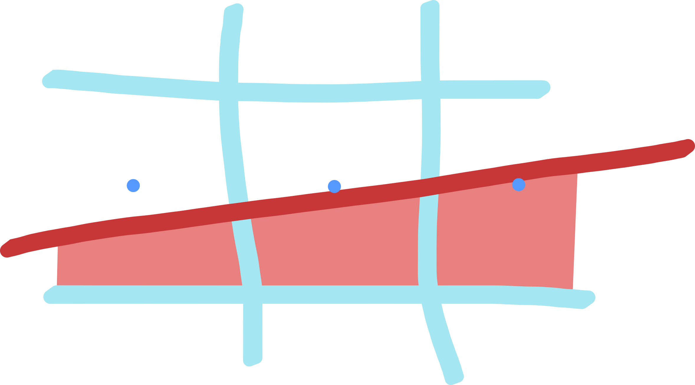
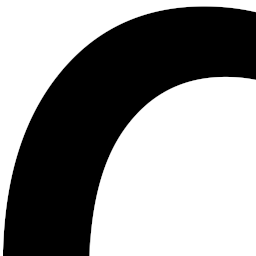
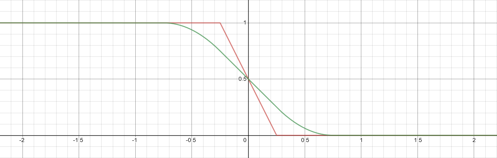
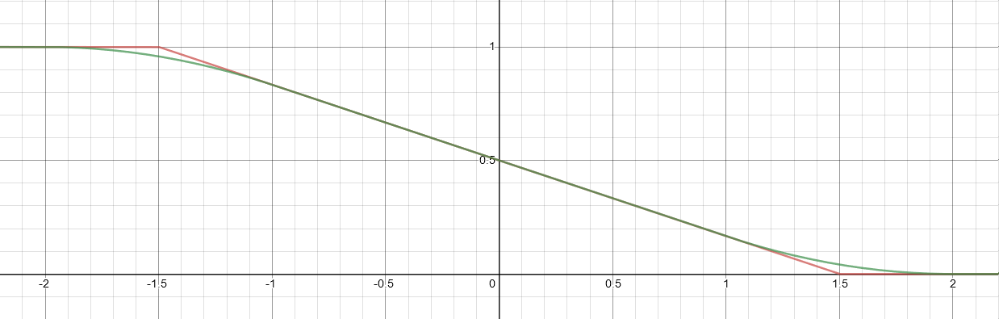

Path Rendering Anti-Aliasing
2020 April 27
Recently, there have been a bunch of new GPU based path renderer using different approaches for achieving real-time framerates with just a few of them mentioned here:
- Li et al. 2016 computes winding numbers via raycasting and ports the classic scanline rasterization over to the GPU
- Eric Lengyel showed in their paper how to combine raycasts with clever optimizations, which is the core of their commercial slug library.
- Raph Levien demonstrated a compute based architecture for a signed distance based approach with piet-metal and the successor is already in the pipeline.
- Patrick Walton developed their Pathfinder library using CPU tiling approach, which has been released to crates.io recently!
Overview
In this post I want to explore one specific part of the path rendering process: Anti-Aliasing! Aliasing appears as result of the rasterization process when presenting curves onto a 'low resolution' screen. It can be seen as jagged edges, which could be smoothed by simply increasing the sampling rate for the cost of increasing the frametimes. For simplicity, we just focus on greyscale for now and reduce the issue to what greyscale value should be assigned to each pixel on the screen imaging rendering black text onto a white screen. The text is encoded as bezier curves where we will further just look at linear and quadratic curves.
Manson and Schaefer 2013 researched how to achieve high quality rendering using an analytic approach by employing convolution with separable filters. We will basically take this as gold standard as polynomial are closed under all the needed operations and we end up with polynomials as closed formula, nice! Unfortunately it's computationally expensive when looking at higher order filters due to function composition, even simple tent filters for quadratic curves already suffer from it.
Approximate AA for 1D Raycasting
For our renderer we are using raycasts as in the first two papers listed. Initially, we went with the classic trapezoid approximation as used in Pathfinder, by casting two vertical and horizontal rays for each pixel to calculate intersection points. Using the separable convolution filter framework this would be calculated by using 1D box filter in x and y direction, but approximating quadratics. In comparison, the "GPU-Centered Font Rendering Directly from Glyph Outlines" paper (2nd in the list) uses two independent raycast (vertical & horizontal) with 1D box filtering with the option for supersampling by averaging the coverage values.
It turned out that the trapezoid approach with raycasts on the GPU in our implementation suffered from floating point errors, so back to the drawing board!
Motivated by the great work of @glowcoil in their gouache path renderer, who managed to achieve good anti aliasing even with only a single(!) ray, I looked more into this direction.
 Let's analyze the issue again in detail using the figure above. The red area denotes the coverage of the pixel for the red curve. We can either raycast vertically of horizontally from the sample point in the center of the pixel. In both cases the distance would be around 0. Using a simple 1D box filter would yield around 50% coverage which looks plausible
#![allow(unused_variables)] fn main() { fn box_filter(distance: f32) -> f32 { clamp(distance + 0.5, 0.0, 1.0) } }
If we look at the pixel at left tho the story is totally different! A raycast in y-direction would yield reasonable results but in x-direction it would be around 0% as the distance would be over 0.5. To improve this we are incorporating the curve tangent on the ray intersection point, which gives an approximation of the trapezoid area coverage. See https://www.desmos.com/calculator/hg7j076glf for a plot of the where we can control the slope m. The green curve is the integral of the red curve which directly denotes the coverage area we are looking for. The figure Exact intergral shows the results when applying this approximation using the integral:
#![allow(unused_variables)] fn main() { fn intergral(d: f32, m: f32) -> f32 { let bound = -0.5 * m; let upper = clamp(d + 0.5, -bound, bound); let lower = clamp(d - 0.5, -bound, upper); let linear = clamp(lower - d + 0.5, 0.0, 1.0); let quadratic = 0.5 * (upper - lower + (upper * upper - lower * lower) / m); linear + quadratic } }
| 1D Box Filtering | Our Integral approximation | Exact integral |
|---|---|---|
|  |
Quality-wise the results are promising, from a computational aspect there is still room for improvement (:
Looking at the integral curve in the plot, we can see its behavior when the slope converges to 0 and inf:
 
For the m = inf case we see that the difference between the red and the green curve becomes negligible, so this would be a good approximation:
We need to further tweak it to handle the m = 0 case by clamping the slope of our curve to not be smaller than 1.
And with a bit of optimization we end up with our approximation:
#![allow(unused_variables)] fn main() { fn approx_aa(d: f32, tangent: f32x2) -> f32 { // Ignore signs as the problem is symmetric let tangent = abs(tangent); // `max` operation keeps the **inverse** slope <= 1 let inv_m = tangent.x / max(tangent.x, tangent.y); clamp(d * inv_m + 0.5, 0.0, 1.0) } }
Conclusion
The Our Integral approximation figure shows that the approximation looks reasonable, it shows small differences to the Exact integral figure if you squint at the cases where the slope is around 1 as this is the place where our approximation has the larger numerical error.
As we target GPUs let's quickly discuss performance compared to the 1D box filter for the GCN architecture as reference:
absandclampoperations are basically free on this architecture (operator modifier)max,mulrun on full-rate andrcp(div) on quarter-rate -> (1 + 1 + 4) * 4 cycles overhead
Overall I'm quite happy with the results even with this very crude approximation for only minimal performance overhead.